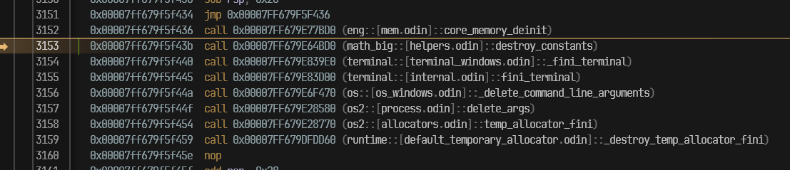

-
Check
runtime/entry_unix.odin/runtime/entry_windows.odin/ etc. -
For unix NO_CRT,
runtime/entry_unix_no_crt_X.asmruns before even calling the_start_odin(). -
Unix example:
@(link_name="main", linkage="strong", require)
main :: proc "c" (argc: i32, argv: [^]cstring) -> i32 {
args__ = argv[:argc]
context = default_context()
#force_no_inline _startup_runtime()
intrinsics.__entry_point()
#force_no_inline _cleanup_runtime()
return 0
}
-
The arguments are passed by the C runtime library (libc), to then be stored a global variable for use by the other modules.
// IMPORTANT NOTE(bill): Do not call this unless you want to explicitly set up the entry point and how it gets called
// This is probably only useful for freestanding targets
foreign {
@(link_name="__$startup_runtime")
_startup_runtime :: proc "odin" () ---
@(link_name="__$cleanup_runtime")
_cleanup_runtime :: proc "odin" () ---
}
-
_startup_runtime-
Initializes some global variables and calls
@(init)functions in the code.
-
-
_cleanup_runtime-
Calls
@(fini)functions. -
_cleanup_runtime_contextless-
Contextless variant, only called by
os.exit()from thecore:oslibrary (os1).
_cleanup_runtime_contextless :: proc "contextless" () { context = default_context() _cleanup_runtime() } -
-
-
@(init)-
This attribute may be applied to any procedure that neither takes any parameters nor returns any values. All suitable procedures marked in this way by
@(init)will then be called at the start of the program before main is called. -
The exact order in which all such intialization functions are called is deterministic and hence reliable. The order is determined by a topological sort of the import graph and then in alphabetical file order within the package and then top down within the file.
-
-
@(fini)-
Like
@(init)but run at after the main procedure finishes
-
-
Cool tip: you can see the order of execution in the dissasembly; it's obvious, but good to remember:
-

. -
Here I'm using RadDBG and placed a breakpoint at the end of main.
-
-
@(entry_point_only)-
Marks a procedure that can be called within the entry point only
-
-
ODIN_NO_ENTRY_POINT-
true if the
-no-entry-pointcommand line switch is passed, which makes the declaration of a main procedure optional.
-
-
Writing an OS Kernel in Odin .
-
Cool.
-
Runtime initialization/cleanup
-
These are not strictly required for compilation, but if global variables or
@(init)/@(fini)blocks are used, these procedures need to be called inside the entry point. -
_startup_runtime -
_cleanup_runtime
Source Code
-
src/llvm_backend.hpp:650
#define LB_STARTUP_RUNTIME_PROC_NAME "__$startup_runtime"
#define LB_CLEANUP_RUNTIME_PROC_NAME "__$cleanup_runtime"
#define LB_TYPE_INFO_DATA_NAME "__$type_info_data"
#define LB_TYPE_INFO_TYPES_NAME "__$type_info_types_data"
#define LB_TYPE_INFO_NAMES_NAME "__$type_info_names_data"
#define LB_TYPE_INFO_OFFSETS_NAME "__$type_info_offsets_data"
#define LB_TYPE_INFO_USINGS_NAME "__$type_info_usings_data"
#define LB_TYPE_INFO_TAGS_NAME "__$type_info_tags_data"
-
src/llvm_backend.cpp:lb_create_startup_runtime:2120 -
src/llvm_backend.cpp:lb_generate_code:3510-
gen->startup_runtime -
gen->cleanup_runtime
-
-
src/llvm_backend.cpp:lb_generate_code:3535 -
src/llvm_backend.cpp:lb_create_main_procedure:2785-
Entry point.
-
src/llvm_backend.cpp:lb_create_main_procedure:2851
-
Implicit non-constant global_variable initializers
-
I used the RegEx
^\w+ +:= +.*?\(looking for places where that happen.-
I only found uses inside the
core:os1library andcore:bufio/read_writer.odin, but I think the last one was a typo (?).
-
-
I used the RegEx
^\w+ +:: +(?!#force_no_inline|#force_inline|#type|proc|union|struct).*?\(, but there were a lot of results to check, so left it alone; probably doesn't make sense to check these anyway.
Disabling the
_startup_runtime
-
Proposal .
(2025-12-16)
import os "core:os/os2"
import "core:fmt"
COMPTIME_CONST :: #config(COMPTIME_CONST, true)
CONST :: "HELLO THINGS"
My_Struct :: struct {
a, b, c: int,
d: string,
e: []f64,
}
my_struct := My_Struct{
a = 1,
b = 2,
c = 1283,
e = { 12.4, 65.2, 86.45 },
}
my_other_struct := constructor()
constructor :: proc "contextless" () -> My_Struct { // The compiler requires it to be "contextless".
context = {}
slice := make([]f64, 5, runtime.heap_allocator())
copy(slice, []f64{ 111, 222, 333, 444, 555 })
return {
a = 5555,
b = 99998,
c = 7766565,
e = slice,
}
}
main :: proc() {
os.init_std_files()
fmt.printfln("os.args: '%v'", os.args)
fmt.printfln("CONST: '%v'", CONST)
fmt.printfln("COMPTIME_CONST: '%v'", COMPTIME_CONST)
fmt.printfln("my_struct: '%v'", my_struct)
fmt.printfln("my_other_struct: '%v'", my_other_struct)
}
-
Prints:
os.args: '[]'
CONST: 'HELLO THINGS'
COMPTIME_CONST: 'true'
my_struct: 'My_Struct{a = 1, b = 2, c = 1283, d = "", e = [12.4, 65.2, 86.45]}'
my_other_struct: 'My_Struct{a = 0, b = 0, c = 0, d = "", e = []}'
-
So
os.argsandmy_other_structis not initialized.